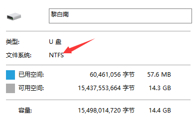

Centos7上安装ifort2013使用说明-鲁凯亮¶
1. 下载Intel Fortran¶
本文先给出linux系统下ifort2013的下载地址， http://pan.baidu.com/s/1qY30xcg
2.U盘导入¶
首先要做的工作是确定你的U盘格式，插入U盘，右击，点击“属性”。
{kind=link}
可以看到我的U盘为ntfs格式，需要安装ntfs-3g的插件，而且没有yum源，需要下载，比较麻烦。 如果你的linux物理机上已经安装了ntfs-3g的插件，那么直接可以进行挂载。 如果没有安装ntfs-3g的插件，那么可以把U盘格式转换为fat格式。U盘在fat格式下不需要ntfs-3g插件，可直接挂载。
以下命令我均以root身份执行，若是普通用户，需要sudo+命令，例如 sudo passwd
FAT格式下的U盘挂载
（1）插入U盘，在终端输入命令（严格区分大小写） fdisk –l（此命令为root用户登陆，如果是普通用户， 需要sudo权限，sudo fdisk -l，查看分区概况
设备名称为 /dev/sdb1 ，U盘格式为FAT
（2）建立usb挂载点
cd /mnt/
mkdir usb
（3）挂载U盘
mount –t vfat /dev/sdb1 /mnt/usb
（4）进入U盘并查看
cd /mnt/usb; ls
里面有一个许可文件.lic和压缩包.tgz
（5）将这许可文件和压缩包拷入另一目录（注意此时你在/mnt/usb下）
mkdir /home/lkl/ifort2013
cp –r *.lic /home/lkl/ifort2013
cp –r *.tgz /home/lkl/ifort2013
（6）卸载U盘
umount /mnt/usb
（7）进入目标目录
cd /home/lkl/ifort2013
至此，准备工作已经做完。
3. NTFS格式处理¶
如果U盘格式是NTFS格式，而且你的linux物理机上安装了ntfs-3g的插件
（1）同样地，先查看分区概况
fdisk –l
（2）挂载U盘
mount –t ntfs-3g /dev/sdb1 /mnt/usb（前面已经建立了挂载点/mnt/usb）
接下里的操作步骤与U盘是FAT格式下的操作相同，不再累赘。
4. 安装ifort¶
（1）解压压缩包
tar –zxvf *.tgz
为了方便，我将*.lic文件名修改为ifort2013.lic
mv *.lic ifort2013.lic
（2）进入解压后目录
cd parallel_studio_xe_2013_update2/;ls
里面有一个install.sh文件，执行下面命令安装
./install.sh
（3）安装过程
输入“1”，回车，进去安装阶段。安装过程总共分为7步
第一步：直接回车。接下来系统提示Option>Missing Optional Pre-requisite(s)，不用理会，输入 1 ，回车。
{kind=link}
{kind=link}
第二步：不停按空格键，停下来之后输入 accept ，回车
{kind=link}
第三步：输入 1 ，回车。
{kind=link}
第四步：输入 2 ，回车（不参与产品更新体验）
第五步：这里我们采用默认安装，输入 1 ，回车。（这里应该是 /opt/intel ，因为我的截图不小心删了，在网上找的一张截图）
{kind=link}
第六步：安装完成后，回车
（4）新建环境变量
进入安装目录
cd /opt/intel;ls
gedit ~/.bashrc
在最后一行依次输入
export IFORTHOME=/opt/intel2017
export PATH=/opt/intel2017/bin:$PATH
export LD_LIBRARY_PATH
=/opt/intel2017/compilers_and_libraries_2017/linux/lib/intel64
export LD_LIBRARY_PATH
=$LD_LIBRARY_PATH:/opt/intel2017/mkl/lib/intel64
保存修改，并关闭 .bashrc 文件
（5）使环境变量生效
source ~/.bashrc
（6）重启电脑
reboot
（7）重启电脑后输入命令
ifort –v
如果显示版本信息，则安装正确（我的版本为ifort version 17.0.4）。即2017update4。
5. 卸载ifort¶
（1）在安装目录中找到 uninstall.sh 文件，执行该文件
./uninstall.sh
（2）如果不小心手残，先将ifort的安装的目录删除了。此时再重新安装ifort， 会出现“已经安装该产品”这种错误提示，导致安装程序无法正常进行。这是因为在上一次安装的时候， 安装了一大堆rmp文件，并将文件的信息写入了rmp数据库中，而在删除的时候数据库并没有被更新。再次安装的时候， 会在数据库中检测到，继而出现“已经安装该产品”的提示错误。解决办法挺简单的，找到所有已安装的intel相关的包，然后删除。
rpm –qa | grep intel | awk ‘{print”yum remove -y”,$1}’ > uninstall.sh
查看uninstall.sh文件，删除其中不以intel开头的包。然后用root权限执行该脚本即可。 （先chmod 777 uninstall.sh，然后./uninstall.sh）
郑重声明¶
（1）以上操作均以root身份执行
（2）本文是篇参考文章，尤其是对新手来说，在安装过程中会遇到各种各样的问题，请不要认为这篇文章无用。 因为linux操作系统在安装软件时可能需要各种各样的插件，如果你正好缺少哪个插件，则可能会安装失败。
（3）经过本人亲测，按照上面的教程安装成功。如有疑问，欢迎拍砖。本人联系方式如下
QQ： 735343320